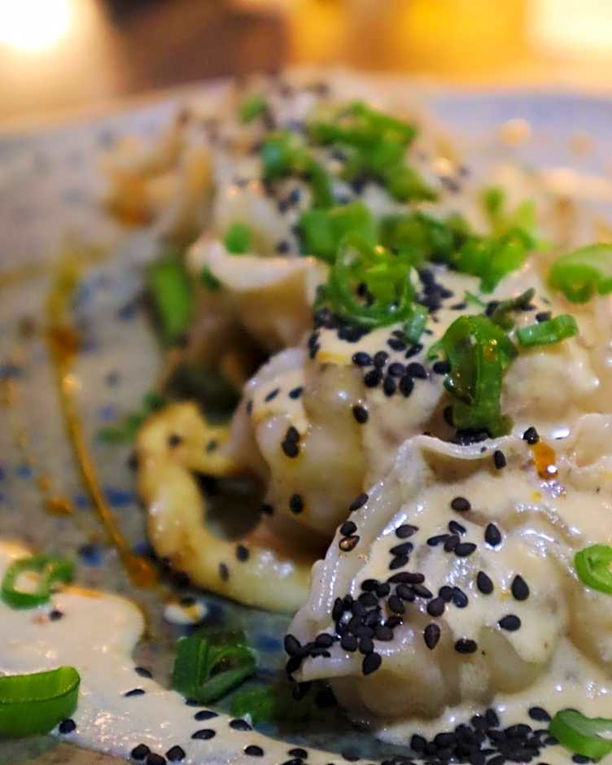

Actividades para disfrutar en Huatulco
Huatulco ofrece una amplia gama de actividades para los visitantes. Puedes explorar sus hermosas playas, practicar deportes acuáticos como el snorkel y el buceo, o disfrutar de excursiones en barco para descubrir las bahías cercanas. Además, la región cuenta con una rica cultura y deliciosa gastronomía que no puedes perderte.
Gastronomía local
La gastronomía de Huatulco es una deliciosa mezcla de sabores tradicionales y mariscos frescos. No puedes dejar de probar platillos como el ceviche, los tacos de pescado y las tlayudas. Además, la región cuenta con una variedad de restaurantes que ofrecen tanto comida local como internacional para satisfacer todos los gustos.
